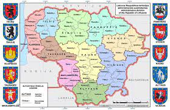

Valstybės plotas – 65 300 kv.
km.
Geografinė padėtis. Lietuvos
valstybės teritorija plyti rytinėje Baltijos jūros pakrantėje.
1989 m. Prancūzijos nacionalinis geografijos institutas nustatė,
kad Lietuvoje, 26 km į šiaurę nuo Vilniaus, šalia Purnuškių kaimo,
yra Europos geografinis centras.
Valstybės kaimynės – Latvija,
Baltarusija, Lenkija, Rusija.
Sostinė – Vilnius.
Valiuta – Euras.
Politinė sistema Lietuvoje – parlamentinė demokratija.
Valstybės vadovas – Prezidentas, vykdomoji valdžia –
Prezidento skiriama Vyriausybė, įstatymų leidžiamoji
valdžia – Seimas.
Administracinis suskirstymas.
Lietuvos teritorija suskirstyta į 10 apskričių. Apskritis sudaro
60 savivaldybių. Savivaldybės suskaidytos į 546 seniūnijas.
Ypatinga mūsų istorija: 1918 m.
vasario 16 d. pasirašytas Nepriklausomybės Aktas ir Lietuva
paskelbta nepriklausoma valstybe; 1990 m. kovo 11 d. atkurta
Lietuvos Respublikos Nepriklausomybė.
© Matas Radioniovas